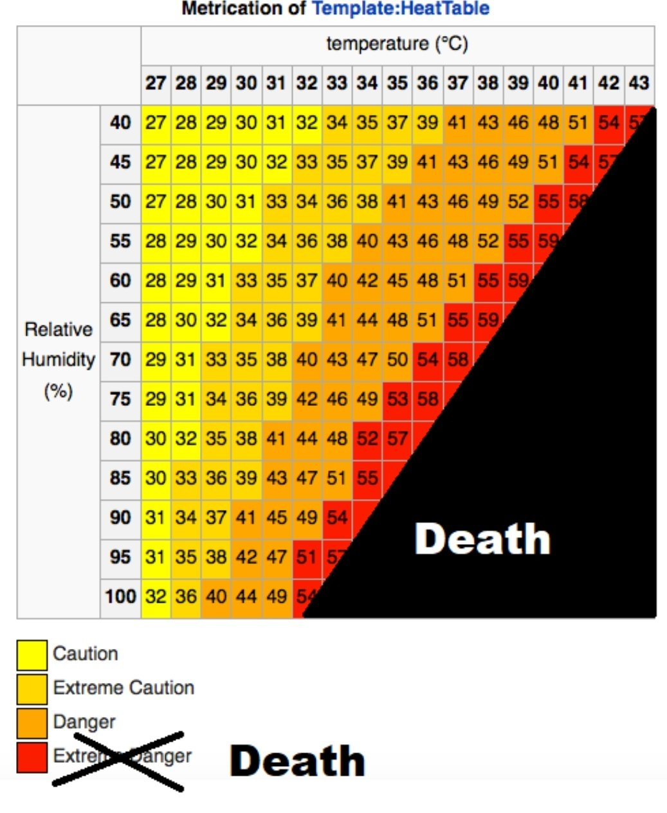
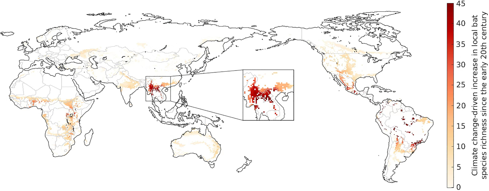

5 Human Health
5.2 Humid Heat Bulbs
Foster on Raymond
In the article “The Emergence of Heat and Humidity Too Severe for Human Tolerance,” published in Science Advances, Colin Raymond, Tom Matthews, and Radley M. Horton explain that what are called dry-bulb temperatures, measurements obtained from an ordinary thermometer, are not adequate in ascertaining the dangers to human health associated with heat stress.68 Instead, it is necessary to measure the wet-bulb temperature—heat and humidity. This is obtained by placing a wet cloth on the thermometer and blowing air on it. Human beings cool themselves or shed their metabolic heat at high temperatures via sweat-based latent cooling. But once the wet-bulb temperature reaches 35°C (or 95°F), this cooling mechanism ceases to be effective. Under such conditions, human beings are not able to cool themselves by sweating, even if they are in the shade, wearing little clothing, and drinking plenty of water. When outside and exposed to such wet-bulb temperatures for six hours, even young, healthy individuals will perish from this heat stress. In humid regions, and for populations whose physical conditions are less than optimal, it is possible for lives to be threatened even with lower wet-bulb temperatures, between 26°C and 32°C, as was the case in the heatwaves that hit Europe in 2003 and Russia in 2010, killing thousands of people, especially the elderly and other vulnerable populations.69
Raymond and his colleagues stress that “extreme heat remains one of the most dangerous natural hazards” and “a wet-bulb temperature…of 35°C marks our upper physiological limit.” Thus, it is not possible simply to adapt to progressively warmer temperature, when heat and humidity surpass the point of what is survivable. These worrying wet-bulb temperature conditions are occurring a few hours at a time in coastal and major river regions of South Asia, the Middle East, Mexico, and Central America. Such conditions are likely to become more regular and to last longer in these regions over the next few decades, or even years, with even more deadly consequences, while spreading across larger terrestrial stretches, rendering parts of the world uninhabitable. In the second half of the century, if “business-as-usual” trends continue, the likely consequences are too horrific to imagine.70
Foster (2022) On Raymond (Monthly Review July/August 2022)

Abstract Raymond:
Humans’ ability to efficiently shed heat has enabled us to range over every continent, but a wet-bulb temperature (TW) of 35°C marks our upper physiological limit, and much lower values have serious health and productivity impacts. Climate models project the first 35°C TW occurrences by the mid-21st century. However, a comprehensive evaluation of weather station data shows that some coastal subtropical locations have already reported a TW of 35°C and that extreme humid heat overall has more than doubled in frequency since 1979. Recent exceedances of 35°C in global maximum sea surface temperature provide further support for the validity of these dangerously high TW values. We find the most extreme humid heat is highly localized in both space and time and is correspondingly substantially underestimated in reanalysis products. Our findings thus underscore the serious challenge posed by humid heat that is more intense than previously reported and increasingly severe.
Raymond (2020) The emergence of heat and humidity too severe for human tolerance (pdf)
Inside
While scientists warn with increasing urgency that global warming is sharply increasing the likelihood of deadly heat waves, many regions are doing little to protect vulnerable populations.
Recent research shows that the global death toll from extreme heat is rising, but still, “Large parts of society don’t think of heat as a threat,” said University of Oxford University climate scientist Fredi Otto after researchers unveiled a series of new extreme heat studies at the European Geosciences Union online conference last month.
The research discussed at the conference suggests that many models are underestimating the short-term threat to the most vulnerable areas—densely populated tropical regions—and that the threats aren’t clearly communicated. And a study released in late April showed that, in the U.S., the risk of power failures during such heatwaves could increase the death toll.
Last week’s updates to the U.S. Environmental Protection Agency’s Climate Indicators website, which had been delayed for years by the Trump administration, showed that major U.S. cities experienced three times as many heat waves—four or more days with temperatures that should only occur every 10 years—in the 2010s as during the 1960s. The season in which heat waves occur has lengthened by 47 days. In addition to heat exhaustion, recent research also showed that extreme heat dramatically increases the chances of pre-term births.
Mann on US Heat Dome 2021
he science is clear on how human-caused climate change is already affecting heat waves: Global warming has caused them to be hotter, larger, longer and more frequent. What were once very rare events are becoming more common.
Heat waves now occur three times as often as they did in the 1960s — on average at least six times a year in the United States in the 2010s. Record-breaking hot months are occurring five times more often than would be expected without global warming. And heat waves have become larger, affecting 25 percent more land area in the Northern Hemisphere than they did in 1980; including ocean areas, heat waves grew 50 percent.
Extreme heat is the deadliest form of extreme weather in the United States, causing more deaths on average than hurricanes and floods combined over the past 30 years. Recent research projects that heat stress will triple in the Pacific Northwest by 2100
The heat wave afflicting the Pacific Northwest is characterized by what is known as an omega block pattern, because of the shape the sharply curving jet stream makes, like the Greek letter omega (Ω). This omega curve is part of a pattern of pronounced north-south wiggles made by the jet stream as it traverses the Northern Hemisphere. It is an example of a phenomenon known as wave resonance, which scientists (including one of us) have shown is increasingly favored by the considerable warming of the Arctic.
5.2.1 Urban Heat Exposure
Tuholske Significance
Increased extreme heat exposure from both climate change and the urban heat island effect threatens rapidly growing urban settlements worldwide. Yet, because we do not know where urban population growth and extreme heat intersect, we have limited capacity to reduce the impacts of urban extreme heat exposure. Here, we leverage fine-resolution temperature and population data to measure urban extreme heat exposure for 13,115 cities from 1983 to 2016. Globally, urban exposure increased nearly 200%, affecting 1.7 billion people. Total urban warming elevated exposure rates 52% above population growth alone. However, spatially heterogeneous exposure patterns highlight an urgent need for locally tailored adaptations and early warning systems to reduce harm from urban extreme heat exposure across the planet’s diverse urban settlements.
Tuholske Abstract
Increased exposure to extreme heat from both climate change and the urban heat island effect—total urban warming—threatens the sustainability of rapidly growing urban settlements worldwide. Extreme heat exposure is highly unequal and severely impacts the urban poor. While previous studies have quantified global exposure to extreme heat, the lack of a globally accurate, fine-resolution temporal analysis of urban exposure crucially limits our ability to deploy adaptations. Here, we estimate daily urban population exposure to extreme heat for 13,115 urban settlements from 1983 to 2016. We harmonize global, fine-resolution (0.05°), daily temperature maxima and relative humidity estimates with geolocated and longitudinal global urban population data. We measure the average annual rate of increase in exposure (person-days/year−1) at the global, regional, national, and municipality levels, separating the contribution to exposure trajectories from urban population growth versus total urban warming. Using a daily maximum wet bulb globe temperature threshold of 30 °C, global exposure increased nearly 200% from 1983 to 2016. Total urban warming elevated the annual increase in exposure by 52% compared to urban population growth alone. Exposure trajectories increased for 46% of urban settlements, which together in 2016 comprised 23% of the planet’s population (1.7 billion people). However, how total urban warming and population growth drove exposure trajectories is spatially heterogeneous. This study reinforces the importance of employing multiple extreme heat exposure metrics to identify local patterns and compare exposure trends across geographies. Our results suggest that previous research underestimates extreme heat exposure, highlighting the urgency for targeted adaptations and early warning systems to reduce harm from urban extreme heat exposure.
Tuholske Memo
Our main findings use an extreme heat exposure threshold defined as WBGT max > 30 °C, the International Standards Organization (ISO) occupational heat stress threshold for risk of heat-related illness among acclimated persons at low metabolic rates (100 to 115 W). WBGT max is a widely used heat stress metric that captures the biophysical response of hot temperature–humidity combinations that reduce labor output, lead to heat-related illness, and can cause death. In using a threshold WBGT max > 30 °C, which has been associated with higher mortality rates among vulnerable populations, we aim to identify truly extremely hot temperature–humidity combinations that can harm human health and well-being. We recognize, however, that strict exposure thresholds do not account for individual-level risks and vulnerabilities related to acclimatization, socio-economic, or health status or local infrastructure. We also note that there are a range of definitions of exposure, and we provide further analysis identifying 2-d or longer periods during which the maximum heat index (HI max ) exceeded 40.6 °C following the US National Weather Service’s definition for an excessive heat warning.
Tuholske (2021) Global urban population exposure to extreme heat (pdf)
5.3 COVID
Abstract Beyer
Bats are the likely zoonotic origin of several coronaviruses (CoVs) that infect humans, including SARS-CoV-1 and SARS-CoV-2, both of which have caused large-scale epidemics. The number of CoVs present in an area is strongly correlated with local bat species richness, which in turn is affected by climatic conditions that drive the geograph- ical distributions of species. Here we show that the southern Chinese Yunnan province and neighbouring regions in Myanmar and Laos form a global hotspot of climate change-driven increase in bat richness. This region coin- cides with the likely spatial origin of bat-borne ancestors of SARS-CoV-1 and SARS-CoV-2. Accounting for an es- timated increase in the order of 100 bat-borne CoVs across the region, climate change may have played a key role in the evolution or transmission of the two SARS CoVs.

5.4 Metabolism
Global temperature rises threaten food chains and the survival of larger animals. Warmer conditions result in less efficient energy transfer, ultimately causing reductions in biomass.
Temperature rises due to the global climate crisis are putting growing pressure on food chains, ultimately threatening the survival of larger animals. New research examined the transfer of energy from tiny single celled organisms up to large mammals. 4C of warming reduced the energy transfer by up to 56 per cent - posing a grave risk to animals higher up the food chain.
Scientists from the University of Exeter and Queen Mary University of London measured the transfer of energy from phytoplankton - a kind of single-celled algae, to small animals which eat them - (zooplankton). Warmer conditions increase the “metabolic cost” of growth, meaning there was less efficient energy flow through the food chain, and consequently a reduction in overall biomass.
Phytoplankton and zooplankton are the foundation of food webs that support freshwater and marine ecosystems that humans depend on.
The study is the first direct evidence that the cost of growth increases in higher temperatures, limiting the transfer of energy up a food chain.
Abstract Barneche:
In natural ecosystems, the efficiency of energy transfer from resources to consumers determines the biomass structure of food webs. As a general rule, about 10% of the energy produced in one trophic level makes it up to the next. Recent theory suggests this energy transfer could be further constrained if rising temperatures increase metabolic growth costs, although experimental confirmation in whole ecosystems is lacking. We quantified nitrogen transfer efficiency (a proxy for overall energy transfer) in freshwater plankton in artificial ponds exposed to 7 years of experimental warming. We provide the first direct experimental evidence that, relative to ambient conditions, 4 °C of warming can decrease trophic transfer efficiency by up to 56%. In addition, both phytoplankton and zooplankton biomass were lower in the warmed ponds, indicating major shifts in energy uptake, transformation and transfer. These new findings reconcile observed warming-driven changes in individual-level growth costs and carbon-use efficiency across diverse taxa with increases in the ratio of total respiration to gross primary production at the ecosystem level. Our results imply that an increasing proportion of the carbon fixed by photosynthesis will be lost to the atmosphere as the planet warms, impairing energy flux through food chains, with negative implications for larger consumers and the functioning of entire ecosystems.